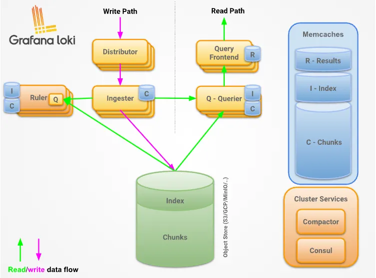

Loki
LAG 日志管理架构和组件
可观测性
可观测性是 通过系统外部输出的数据(指标、日志、链路追踪),无需改动代码、不侵入系统内部,就能推断系统内部状态、定位问题根因 的能力,源自控制论,后广泛用于分布式IT系统(云原生)微服务)。
总之:不知道系统会出什么错,但仅凭外部观测数据,就能:搞清楚哪里出问题、为什么出问题。
三大核心支柱
- 指标Metrics 数值型时序数据，如CPU使用率、QPS、错误率、延迟、队列长度。适合告警、趋势监控。产品如：zabbix、prometheus。
- 日志Logs 离散文本事件，程序打印的运行记录,包含错误堆栈、业务上下文。适合问题细节排查。
- 链路追踪Traces 记录一次请求跨多个服务完整调用路径，每个环节耗时、错误。专门解决微服务分布式调用故障定位。产品如：skywalking
主流日志管理方案对比
- ELK: Elasticsearch + Logstash + Kibana(传统经典)
- ELFK: Elasticsearch + Filebeat + Logstash + Kibana(生产最常用的 ES 分层架构)
- EFK: Elasticsearch + Fluent-Bit + Kibana(K8s 轻量化 ES 栈)
- PLG: Promtail + Loki + Grafana( 旧版Loki栈，2026-03式 EOL，新项目不再推荐)
- LAG: Loki + Alloy + Grafana(新一代，Promtail 已经EOL，代 Promtail 采集)
对比
| 对比维度 | ELFK | EFK | PLG(旧) | LAG(新) |
| 组件构成 | ||||
| 索引模型 | 全文倒排索引 | 全文倒排索引 | 仅索引标签 labels，正文不建索引 | 仅索引标签 labels，正文不建索引 |
| 存储成本 | 高，原始日志1.5-3倍 | 高 | 很低，约 ES 的 1/10-1/20 | 很低，约 ES 的 1/10-1/20 |
| 资源消耗 | 高(JVM 吃内存 CPU) | 中等； Fluntet-Bit 轻量 agent | 低 | 低; Alloy 单二进制 |
| 查询能力 | 全文检索极强、复杂聚合、KQL | 同ELK | 标签过滤极快；无全局全文 | 同PLG；Alloy 同时采集日志/指标 |
| 索引，大范围关键词搜索慢 | /trace | |||
| 运维复杂度 | 高，分片/JVM/版本严格对齐 | 中高；ES 依旧重 | 低；Loki 支持对象存储 S3/OSS | 中； River 组件式配置学习成本 |
| 核心优势 | 插件极多，日志分析、审计、安全 SIEM | Fluent-Bit 适合 k8s DaemonSet | 成本极低； 和 Prometheus/Grafana | 单 Agent 统一可观测采集 |
| 能力强，分层架构：Filebeat 本机 | 资源占用低 | 生态打通；LogQL 类似 PromQL | (Logs+Mertics+Trace)；替代 | |
| 采集，Logstash 集中过滤转换， | Promtail；组件模式 forward_to； | |||
| 生产 ES 标准架构 | 和 OTel 生态兼容 | |||
| 主要短板 | 整套组件多，ES 集群调优门槛高， | ES 存储成本、运维负担 | 全局模糊检索弱；标签设计很关键， | 大范围全文检索性能弱； |
| 成本昂贵 | 没有减少 | 标签爆炸会压垮 Loki | River 配置模型需要学习 | |
| 适用场景 | 大规模生产 ES，千万级日志吞吐， | k8s 环境，想用 ES 但希望采集 | 云原生 k8s，主要用于故障 | 云原生、微服务、k8s； |
| 需要复杂日志解析转换，专职 ES 运维团队 | Agent 轻量化 | 排查，已有 grafana/prometheus | 一套 agent 搞定全部摇测； | |
| 控制存储成本，新项目不选 | 优先新项目采用 |
全文倒排：以关键词反查全文中的位置。索引量比原始日志大。
LAG 架构和组件
Loki 概述
https://grafana.com/docs/loki/latest/
Loki是受Prometheus启发而设计的 水平可扩展、高可用、多租户日志聚合系统 。设计目标是低成本、易于运维。
它不对日志正文内容建立索引,仅为每一条日志流的标签集合建立索引。
注意:日志行的全部内容仍然可以被检索;标签的作用是在查询时缩小待检索日志范围,从而提升查询效率。
Loki 项目由 Grafana Labs 于 2018 年启动，在西雅图 KubeCon 大会正式对外发布。
项目基于 AGPLv3开源协议 对外发布，是开源日志聚合系统，深度绑定 Grafana 生态。
Grafana Labs 主导 Loki 项目的研发工作，在 Grafana 中提供一流的 Loki 适配能力，保障 Grafana Labs 的客户能够获取所需的 Loki 技术支持与功能特性。
核心设计思路: 只索引标签(元数据)，不索引日志全文 ，大幅降低存储与索引开销。
优势
- 接入简单: 多客户端支持，不限日志来源与日志格式。
- 对象存储持久化: PB 级大规模，高吞吐，低成本高可靠。
- 日志衍生能力: 从日志生成指标、配置告警规则。
- 不强制入库格式: 采集时无需预先格式化，解析格式化延迟到查询时时处理。
- 实时日志查看: 支持 tail 实时流、自动刷新、按日期检索历史日志。
- 云原生原生集成: 与 Prometheus、Grafana、K8s 深度整合；单 UI 统一观测指标、日志、链路追踪。
Loki Stack组成
https://grafana.com/docs/loki/latest/get-started/overview/
套标准基于 Loki 的日志栈由三大组件构成:
- 采集代理(Agent):
- 日志代理/客户端，例如 Grafana Alloy。
- 代理采集日志，通过附加标签将日志归类为日志流，并经由 HTTP 接口把日志流推送至 Loki。
- Loki 服务端:
- 核心服务程序，负责日志接收、持久化存储以及日志查询运算。
- Grafana:
- 用于查询并可视化展示日志数据。你也可以通过命令行工具 LogCLI 或直接调用 Loki 原生 API 查询日志。
Loki架构
https://grafana.com/docs/loki/latest/get-started/architecture/
Grafana Loki采用微服务架构，设计为水平可扩展的分布式系统。系统包含多个组件，可独立、并行运行。

distributor #分发器。接收日志，根据一致性哈希路由到 ingester ingester #写入实例。内存接收日志，生成 chunk 日志块 consistent hash ring #一致性哈希环。Loki 用于分片日志流的机制 replication factor #复制因子。日志副本数量 quorum #法定多数。写成功需要应答的副本数量 chunk #日志块。Loki存储日志的最小单元，租户+标签唯一 query-frontend #查询前端。接收用户查询，拆分查询任务 query-scheduler #查询调度器。分发子查询任务给 querier querier #查询器。执行实际查询，合并 ingester 与后端存储数据 backing store #后端存储。对象存储，保存已经落盘的 chunk deduplicates #去重。处理多副本带来的重复日志 X-Scope-OrgID #租户请求头。Loki 多租户识别标识
Loki 三种部署模式
Monolithic 单体模式（All-in-One）
把 loki 组件所有功能集成在二进制文件中。
https://grafana.com/docs/loki/latest/setup/install/helm/install-monolithic/
最简单的运行模式是单体部署模式。
通过设置命令行参数 -target=all 启用单体模式。该模式将 Loki 的全部微服务组件运行在同一个进程中，表现为单个二进制程序或 Docker 镜像。
单体模式适合快速上手体检 Loki，也适合用于每日读写数据量最高约 20GB 的小规模场景。
Simple Scalable
https://grafana.com/docs/loki/latest/get-started/deployment-modes/#simple-scalable
简单可扩展部署模式(SSD模式)现已废弃，Loki4.0 将不再支持 SSD 模式运行。
需要规划将 SSD 模式迁移至 微服务模式 或者高可用单体(HAmonolithic)部署模式。
组件拆分三组独立扩容:
- WritePath: Distributor + Ingester(写入链路)I
- ReadPath: QueryFrontend + Querier(查询链路)
- Backend: Compactor + Ruler + IndexGateway(后台任务)
- 适用: TB 级日志,绝大多数企业生产环境
- 配套网关 Nginx 实现读写分离路由
Microservices mode
微服务部署模式将 Loki 的各个组件作为相互独立的进程运行，该部署模式也被称作分布式部署模式。
- 把组件拆分为独立微服务，粒度更细，可对每一个组件单独扩缩容，更好适配业务场景。
- 微服务模式可以实现更高的集群运行效率，但同时它也是部署与维护复杂度最高的模式。
- 仅建议超大规模 Loki 集群，或是需要对扩缩容、集群运维做精细化管控的运维人员使用微服务模式。
- 微服务模式专为 Kubernetes 环境设计，社区提供 Helm Chart 用于部署微服务模式的 Loki。
启动每个进程时需要指定对应的target(组件目标)。包含如下组件:
- BloomBuilder(实验性)
- Bloom Gateway(实验性): 对外暴露 Loki API，将请求代理转发到对应的 Loki 内部组件。
- Bloom Planner(实验性)
- Compactor(压缩器): 对已存储的数据执行压缩与处理。压缩合并自志增快
- Distributor(分发器): 对收到的写入请求做分发处理。分发器，接收 Aggent 日志写入请求，转发给 Ingester
- Index Gateway(索引网关): 负责索引相关处理。索引网关，代理索引访询问
- Ingester(写入接收组件):负责日志数据的摄入写入。接收日志，内存处理后写入对象存储，默认开启可用区感知复制；配置
ingester.replicas: 3时，会创建 3 套 StatefulSet(zon、zone-c)，每套各1个副本。 - OverridesExporter(覆盖配置导出器)
- Querier(查询器): 执行日志查询处理。
- QueryFrontend(查询前端): 管理前端查询请求。查询前端，做查询排队、分片、缓存
- QueryScheduler(查询调度器): 负责查询任务调度。查询调度器，分发发查询任务
- Ruler(规则/告警引擎): 规则引擎，执行日志规则、生成指标、告警
Loki 二进制部署
架构：Loki + Alloy + MinIO + Grafana + AlertManager
说明：
- 纯二进制原生部署，无需要依赖 Docker、k8s 容器环境。
- 架构实现：日志采集 –> 结构化清洗 –> 压缩存储 –> 可视化查询 –> 告警，轻量化场景，资源占用低、运维简单、稳定性高。
技术栈选型
- 日志服务端：grafana loki
- 日志采集端：grfana alloy
- 对象存储：minio
- 可视化平台：grafana 原生部署
- 测试工具：flog 二进制日志压测工具。
核心数据流：
- Flog 模拟日志/业务日志 –> Alloy 采集监听 –> 日志结构化解析、动态打标签、清洗 –> 批量推送 Loki –> Loki TSDB 索引构建 + 压缩 –> Grafana 可视化查询、LogQL 聚合指标化 –> AlertManager 日志告警。
部署环境
10.103.236.201 Loki/Grafana/AlertManager 2C/2G ubuntu 10.103.236.202 Alloy/Flog/Docker/MinIO 2C/2G ubuntu
准备日志
应用日志、容器日志
flog 准备应用日志文件
二进制安装 log 日志压测工具 Flog
FLOG_VERSION=0.4.4 GO_VERSION=1.25.0 ARCH=$([ `arch` = "aarch64" ] && echo arm64 || echo amd64) # 安装 go 语言 wget https://studygolang.com/dl/golang/go${GO_VERSION}.linux-${ARCH}.tar.gz tar xf go${GO_VERSION}.linux-${ARCH}.tar.gz -C /usr/local/ 设置环境变量 cat >/etc/profile.d/go.sh<<\EOF export GOROOT=/usr/local/go export GOPATH=/go/lib:/go/goproject #export GOBIN=/go/gobin export PATH=$PATH:$GOROOT/bin:$GOBIN EOF mkdir /go/{lib,goproject,gobin} -pv mkdir /go/goproject/src -pv # 生效 source /etc/profile go env -w GOPROXY=https://goproxy.cn,direct # 编译安装 flog mkdir -p $GOPATH/src/flog cd $GOPATH/src/flog git clone --depth 1 --branch v${FLOG_VERSION} https://github.com/mingrammer/flog.git cd flog CGO_ENABLED=0 go build -o flog . cp ./flog /usr/local/bin/ flog -h
systemd 开机配置
cat > /lib/systemd/system/flog.service <<EOF [Unit] Description=Flog fake log generator for loki test After=network.target [Service] Type=simple ExecStart=/usr/local/bin/flog -f json -d 200ms -l # 每 200 ms 生成日志 Restart=always StandardOutput=journal StandardError=journal [Install] WantedBy=multi-user.target EOF systemctl daemon-reload && systemctl enable --now flog systemctl status flog # 安装 rsyslog apt update apt install rsyslog -y systemctl enable --now rsyslog systemctl status rsyslog # 查看 json 日志 journalctl -u flog -f tail -f /var/log/syslog
使用 flog 生成其他格式日志
flog -f json -t log -o /var/log/flog/access_json.log -d 300ms -l -w & flog -f apache_common -t log -o /var/log/flog/access_apache_common.log -d 300ms -l -w & flog -f apache_combined -t log -o /var/log/flog/access_apache_combined.log -d 300ms -l -w & #查看日志 head -1 /var/log/flog/access_json.log head -1 /var/log/flog/access_apache_common.log head -1 /var/log/flog/access_apache_combined.log
准备容器日志
#启动两个容器生成日志 docker run -d --name mynginx -p 80:80 \ --label service=nginx \ --label env=prod \ --label version=1.30.0 \ ealen/echo-server:latest docker run -d --name myapp -p 8080:80 \ --label service=myapp \ --label env=dev \ --label ver1.0 \ nbilal786/myapp:latest # 安装 nerdctl 启动容器 apt install -y wget slirp4netns cd /tmp wget https://files.m.daocloud.io/github.com/containerd/nerdctl/releases/download/v2.3.4/nerdctl-2.3.4-linux-${ARCH}.tar.gz tar -zxvf nerdctl-2.3.4-linux-${ARCH}.tar.gz mv nerdctl /usr/local/bin/ chmod +x /usr/local/bin/nerdctl sysctl -a |grep ip_forward # 确认开启内核 IP 转发 # mynginx nerdctl run -d --name mynginx -p 80:80 \ --label service=nginx \ --label env=prod \ --label version=1.30.0 \ ealen/echo-server:latest # myapp nerdctl run -d --name myapp -p 8080:80 \ --label service=myapp \ --label env=dev \ --label ver=1.0 \ nbilal786/myapp:latest root@master01:~# kubectl get pod NAME READY STATUS RESTARTS AGE echo-647c98d9f-zrpdg 1/1 Running 0 29m myapp-8b88f5cdd-5nbx4 1/1 Running 0 3m50s #访问容器,生成容器日志 while true; do curl 10.103.236.202;sleep 1;do & while true; do curl 10.103.236.202:8080;sleep 1;do &
对象存储部署和配置
安装 minIO
注意：2025-04-22 之后的版本功能缺失。
ARCH=$([ `arch` = "aarch64" ] && echo arm64 || echo amd64) wget https://dl.minio.org.cn/server/minio/release/linux-${ARCH}/minio chmod +x minio cp minio /usr/local/bin #MINIO_ROOT_USER=admin MINIO_ROOT_PASSWORD=password ./minio server /mnt/data --console-address ":9001" --address ":9000" # 9001 为管理控制台，9000 为 api 端口 # 编译功能完善的 minio MINIO_VERSION=RELEASE.2025-04-22T22-12-26Z git clone --depth 1 --branch ${MINIO_VERSION} https://github.com/minio/minio.git cd minio CGO_ENABLED=0 go build -o minio . cp ./minio /usr/local/bin/ minio --version # 生成存储和启动配置 mkdir /data/minio -pv groupadd -r minio-user useradd -M -r -g minio-user minio-user chown minio-user:minio-user /data/minio cat >/etc/default/minio<<EOF MINIO_ROOT_USER=admin MINIO_ROOT_PASSWORD=Admin@123456 MINIO_VOLUMES="/data/minio" MINIO_OPTS="--console-address :9001 --address :9000" EOF cat >/lib/systemd/system/minio.service<<\EOF [Unit] Description=MinIO Documentation=https://min.io/docs/minio/linux/index.html Wants=network-online.target After=network-online.target AssertFileIsExecutable=/usr/local/bin/minio [Service] WorkingDirectory=/usr/local User=minio-user Group=minio-user ProtectProc=invisible EnvironmentFile=-/etc/default/minio ExecStartPre=/bin/bash -c "if [ -z \"${MINIO_VOLUMES}\" ]; then echo \"Variable MINIO_VOLUMES not set in /etc/default/minio\"; exit 1; fi" ExecStart=/usr/local/bin/minio server $MINIO_OPTS $MINIO_VOLUMES Restart=always LimitNOFILE=65536 TasksMax=infinity TimeoutStopSec=infinity SendSIGKILL=no [Install] WantedBy=multi-user.target EOF systemctl daemon-reload && systemctl enable --now minio.service systemctl status minio.service journalctl -f -u minio.service
配置
创建 Access Key
Access Key: d3qFSWw6zosYK4xyHeZC Secret Key: iJ8gwfA5lZ3xhhf0n0EarjAkJgByNJKOnZWjJsUd
创建 Bucket
- UI 操作，桶名 loki
安装客户端工具 mc
# 编译功能完善的 minio MC_VERSION='RELEASE.2025-04-16T18-13-26Z' git clone --depth 1 --branch ${MC_VERSION} https://github.com/minio/mc.git cd mc CGO_ENABLED=0 go build -o mc . cp ./mc /usr/local/bin/ mc --version # 配置客户端连接 echo 10.103.236.202 minio.jasper.org >> /etc/hosts mc alias set minio http://minio.jasper.org:9000 d3qFSWw6zosYK4xyHeZC iJ8gwfA5lZ3xhhf0n0EarjAkJgByNJKOnZWjJsUd mc alias ls minio # 测试 mc admin info minio # 查看磁盘空间等信息 mc ls minio # 查看桶信息
Loki 二进制部署和配置
二进制安装
LOKI_VERSION=3.7.8 ARCH=$([ `arch` = "aarch64" ] && echo arm64 || echo amd64) wget https://github.com/grafana/loki/releases/download/v${LOKI_VERSION}/loki-linux-${ARCH}.zip unzip loki-linux-${ARCH}.zip install -m 755 loki-linux-${ARCH} /usr/local/bin/loki loki --version
loki 配置
echo 10.103.236.202 minio.jasper.org >> /etc/hosts mkdir -p /etc/loki cat >/etc/loki/loki.yaml <<\EOF auth_enabled: false server: http_listen_port: 3100 http_listen_address: 0.0.0.0 log_level: info common: path_prefix: /data/loki # minio 对象存储 storage: s3: endpoint: minio.jasper.org:9000 bucketnames: loki access_key_id: d3qFSWw6zosYK4xyHeZC secret_access_key: iJ8gwfA5lZ3xhhf0n0EarjAkJgByNJKOnZWjJsUd # minio 使用 http insecure: true # 强制 path style s3forcepathstyle: true replication_factor: 1 ring: kvstore: store: inmemory # loki v3.x 推荐 TSDB 索引 schema_config: configs: - from: 2024-01-01 # TSDB 索引 store: tsdb # 对象存储改为 mino object_store: s3 schema: v13 index: prefix: index_ period: 24h # 写入组件 ingester: # WAL 仍然保留本地 wal: enabled: true dir: /data/loki/wal chunk_idle_period: 5m max_chunk_age: 1h # TSDB 压缩 compactor: # 本地临时目录 working_directory: /data/loki/compactor compaction_interval: 10m retention_enabled: true # 删除请求存储 delete_request_store: s3 limits_config: # 日志保存 30 天 retention_period: 30d max_query_series: 10000 ingestion_rate_mb: 10 ingestion_burst_size_mb: 20 # 告警规则 ruler: alertmanager_url: http://127.0.0.1:9093 storage: type: local local: directory: /etc/loki/rules rule_path: /data/loki/rules-temp ring: kvstore: store: inmemory enable_api: true EOF # 语法检查 loki -config.file=/etc/loki/loki.yaml -verify-config
配置说明
auth_enabled: false #关闭Loki内置认证,不需要登录鉴权,内网环境使用 server: #HTTP服务配置块 http_listen_port: 3100 #Loki对外HTTP端口,默认3100 http_listen_address: 0.0.0.0 #监听所有网卡,允许外部访问 log_level: info #Loki自身日志输出级别info/debug/warn/error common: #公共配置,多个组件共享 path_prefix: /data/loki #本地数据根目录,wal、临时文件存放根路径 # minio 对象存储 storage: #对象存储配置,日志chunk、索引存 MinIO S3 兼容在储存 s3: endpoint: minio.jasper.org:9000 #MinIO服务地址端口 bucketnames: loki #MinIO桶名称,loki所有数据存在这个bucket access_key_id: d3qFSWw6zosYK4xyHeZC secret_access_key: iJ8gwfA5lZ3xhhf0n0EarjAkJgByNJKOnZWjJsUd # minio 使用 http insecure: true #true 使用http,关闭https证书校验 # 强制 path style s3forcepathstyle: true #MinIO必须开启,使用path模式访问s3,不使用虚拟host模式 replication_factor: 1 #副本数,单机部署写1;集群部署大于1 ring: #一致性ring配置,单机使用内存存储ring信息 kvstore: store: inmemory #ring元数据存内存,单机专用;集群改用etcd # loki v3.x 推荐 TSDB 索引 schema_config: #索引schema配置,定义索引存储格式 configs: - from: 2024-01-01 #该schema生效起始时间,早于该时间的数据不使用此配置 # TSDB 索引 store: tsdb #使用TSDB索引(Lokiv3推荐,替代原先boltdb-shippper) # 对象存储改为 mino object_store: s3 #索引文件存放后端:s3(minio) schema: v13 #schema版本号,v13适配tsdb index: prefix: index_ #对象存储里索引文件名称前缀 period: 24h #索引分片周期,每24小时生成一份独立索引 # 写入组件 ingester: #ingester:接收日志写入,内存攒chunk,刷写到对象存储 # WAL 仍然保留本地 wal: enabled: true #开启WAL预写日志,宕机防止内存日志丢失 dir: /data/loki/wal #WAL本地磁盘存储目录 chunk_idle_period: 5m #chunk空闲5分钟,没有新数据就刷盘到对象存储 max_chunk_age: 1h #chunk最长存活1小时,无论是否空闲强制刷盘 # TSDB 压缩 compactor: #TSDB压缩组件,合并小索引块、执行数据过期删除 # 本地临时目录 working_directory: /data/loki/compactor #compactor工作临时目录,压缩过程中间文件 compaction_interval: 10m #压缩任务执行间隔,每10分钟跑一次压缩 retention_enabled: true #开启数据过期清理,配合retention_period删除旧片日志 # 删除请求存储 delete_request_store: s3 #删除请求记录保存到s3对象存储 limits_config: #全局限流、配额、保存周期配置 # 日志保存 30 天 retention_period: 30d #全局日志保留时长30天,到期自动删除 max_query_series: 10000 #查询最大返回时序序列数量,防止大查询压垮loki ingestion_rate_mb: 10 #单实例日志写入速率上限10MB/s ingestion_burst_size_mb: 20 #写入突发流量上限20MB # 告警规则 ruler: #ruler组件:加载告警规则,执行LogQL,产生告警推送给aalertmanager alertmanager_url: http://127.0.0.1:9093 #Alertmanager接收告警的地址 storage: #ruler规则文件存储配置 type: local #规则使用本地文件模式 local: directory: /etc/loki/rules #告警规则yam1文件存放目录 rule_path: /data/loki/rules-temp #ruler运行时临时缓存目录 ring: kvstore: store: inmemory #ruler ring,单机内存存储 enable_api: true #开启ruler http API,支持curl上传校验规则,调试用
http://10.103.236.201:3100/ring
配置错误排查-ui 还没有前端
# 查找当前版本的配置 /usr/local/bin/loki -help 2>&1 | grep -- '-ui\.' # 带上配置文件再列 target /usr/local/bin/loki -config.file=/etc/loki/loki.yaml -list-targets # 加载后的 ui 块实际长什么样 /usr/local/bin/loki -config.file=/etc/loki/loki.yaml -print-config-stderr 2>&1 | grep -A 25 '^ui:' # 启动日志里 ui 相关的行 grep -i -E 'ui|cluster' /var/log/loki/loki.log | tail -40
systemd 开启自启配置
mkdir -p /var/log/loki
cat >/lib/systemd/system/loki.service <<EOF
[Unit]
Description=Grafana Loki Log Aggregator Service
Documentation=https://grafana.com/docs/loki/latest
After=network-online.target
[Service]
Type=simple
User=root
ExecStart=/usr/local/bin/loki -config.file=/etc/loki/loki.yaml
Restart=always
RestartSec=5
StandardOutput=append:/var/log/loki/loki.log
StandardError=append:/var/log/loki/loki-error.log
LimitNOFILE=65536
[Install]
WantedBy=multi-user.target
EOF
systemctl daemon-reload && systemctl enable --now loki
systemctl status loki
journalctl -f -u loki
验证
# 自动生成相关文件 root@master01:~/.jasper# ls /data/loki/ compactor tsdb-shipper-active tsdb-shipper-cache wal # 查看 loki 相关服务 root@master01:~/.jasper# curl -s http://127.0.0.1:3100/services querier => Running ingester => Running query-frontend => Running server => Running query-scheduler-ring => Running ring => Running analytics => Running query-scheduler => Running rule-evaluator => Running query-frontend-tripperware => Running compactor => Running store => Running ingester-querier => Running ruler => Running cache-generation-loader => Running memberlist-kv => Running distributor => Running root@master01:~/.jasper# curl -s http://127.0.0.1:3100/ready Ingester not ready: waiting for 15s after being ready root@master01:~/.jasper# curl -s http://127.0.0.1:3100/ready ready
Alloy 二进制部署和配置
二进制安装
类似于 filebeat 收集日志
ALLOY_VERSION=1.19.2 ARCH=$([ `arch` = "aarch64" ] && echo arm64 || echo amd64) wget https://github.com/grafana/alloy/releases/download/v${ALLOY_VERSION}/alloy-linux-${ARCH}.zip unzip alloy-linux-${ARCH}.zip install -m 755 alloy-linux-${ARCH} /usr/local/bin/alloy alloy -v
alloy 配置
grafana alloy 配置文件格式说明
使用标准 River 语法构建采集与解析 Pipeline
Grafana Alloy 使用的是 Grafana 自研的配置语言，称为 River(其法设计灵感大量借鉴了 HashiCorp 的 HCL，即 Terraform 的配置语言)。
Alloy 的 River 配置本质是 组件拼图+显式管道 模型，数据流需要手动串联。
日志采集典型链路:
local.file_match发现日志文件 →loki.sounce.file读取文件 →loki.process处理/转换日志 →loki.write推送后端每一步通过forward_to=[组件名.标签receiver]显式把输出传给下一个组件的接收端口。
配套 Alloy 最简示例
// 发现日志文件 local.file_match "log_files" { path_targets = [{__path__ = "/var/log/*.log"}] } // 读取文件，forward_to 将读取的日志输出传递给 loki.process loki.source.file "read_log" { targets = local.file_match.log_files.targets forward_to = [loki.process.filter.receiver] } // 处理日志，再转发给 loki.write loki.process "filter" { stage.drop { expression = "level=~\"debug\"" } forward_to = [loki.write.loki_backend.receiver] } // 推送至 Loki 后端 loki.write "loki_backend" { endpoint { url = "http://loki:3100/loki/api/v1/push" } }
生产环境中 Docker 日志采集建议
- 使用
discovery.docker自动发现容器 - 使用
discovery.relabel清洗 metadata - 只保留低基数 label
- 不把
clientip,path,user-agent等高基数字段作为 loki label
alloy 配置
mkdir -p /etc/alloy cat >/etc/alloy/config.alloy <<\EOF // systemd journal 采集 flog.service loki.source.journal "flog_journal" { // 使用 matches 属性，注意 systemd 单元过滤需要加上 _SYSTEMD_UNIT= matches = "_SYSTEMD_UNIT=flog.service" labels = { job = "flog-journal", env = "prod", } forward_to = [ loki.process.flog_journal.receiver, ] } // journal 日志处理 loki.process "flog_journal" { stage.json { expressions = { level = "level", method = "method", path = "path", status = "status", } } stage.labels { values = { level = "", status = "", } } forward_to = [loki.write.loki_server.receiver] } // ========================= // 定义 flog 文件日志 local.file_match "flog_files" { path_targets = [ { __path__ = "/var/log/flog/access_json.log", job = "flog-json-file", env = "prod", format = "json", }, { __path__ = "/var/log/flog/access_apache_common.log", job = "flog-apache-common", env = "prod", format = "apache_common", }, { __path__ = "/var/log/flog/access_apache_combined.log", job = "flog-apache-combined", env = "prod", format = "apache_combined", }, ] } // 文件日志读取 loki.source.file "flog_files" { targets = local.file_match.flog_files.targets forward_to = [ loki.process.flog_files.receiver, ] } // 文件日志处理 loki.process "flog_files" { // JSON 格式 access.log stage.match { selector = "{format=\"json\"}" stage.json { expressions = { level = "level", method = "method", path = "path", status = "status", } } stage.labels { values = { level = "", status = "", } } } // Apache Common stage.match { selector = "{format=\"apache_common\"}" stage.regex { expression = "^(?P<ip>\\S+) (?P<ident>\\S+) (?P<user>\\S+) \\[(?P<time>.*?)\\] \"(?P<method>\\S+) (?P<path>.*?) (?P<proto>.*?)\" (?P<status>\\d+?) (?P<size>\\d+)" } stage.labels { values = { method = "", status = "", // clientip = "ip"，不要把 ip, path 放进 labels，高基数标签，会打爆 loki 索引 } } } // Apache Combined stage.match { selector = "{format=\"apache_combined\"}" stage.regex { expression = "^(?P<ip>\\S+) (?P<ident>\\S+) (?P<user>\\S+) \\[(?P<time>.*?)\\] \"(?P<method>\\S+) (?P<path>.*?) (?P<proto>.*?)\" (?P<status>\\d+) (?P<size>\\d+) \"(?P<referer>.*?)\" \"(?P<agent>.*?)\"" } stage.labels { values = { method = "", status = "", } } } forward_to = [ loki.write.loki_server.receiver, ] } // 写入 loki loki.write "loki_server" { endpoint { url = "http://10.103.236.201:3100/loki/api/v1/push" } } // ========================= // containerd Pod 容器日志 // ========================= // 1) 发现所有容器日志文件 local.file_match "pod_logs" { path_targets = [{ __path__ = "/var/log/pods/*/*/*.log", job = "containerd-pods", node = constants.hostname, env = "prod", }] sync_period = "10s" } // 2) 从文件路径里提取 namespace / pod / container 标签 // /var/log/pods/kube-system_calico-node-222ml_b1223a0a-.../calico-node/4.log discovery.relabel "pod_logs" { targets = local.file_match.pod_logs.targets rule { source_labels = ["__path__"] regex = "/var/log/pods/([^/_]+)_([^/_]+)_([^/]+)/([^/]+)/[0-9]+\\.log" target_label = "namespace" replacement = "$1" } rule { source_labels = ["__path__"] regex = "/var/log/pods/([^/_]+)_([^/_]+)_([^/]+)/([^/]+)/[0-9]+\\.log" target_label = "pod" replacement = "$2" } rule { source_labels = ["__path__"] regex = "/var/log/pods/([^/_]+)_([^/_]+)_([^/]+)/([^/]+)/[0-9]+\\.log" target_label = "container" replacement = "$4" } // 可选：不想收的 namespace 直接丢掉 // rule { // source_labels = ["namespace"] // regex = "kube-system|calico-system" // action = "drop" // } } // 3) tail 文件 loki.source.file "pod_logs" { targets = discovery.relabel.pod_logs.output forward_to = [loki.process.pod_logs.receiver] tail_from_end = true // 首次启动只收新日志，避免灌历史 } // 4) 解析 CRI 格式 // https://grafana.com/docs/alloy/latest/reference/components/loki/loki.process/ loki.process "pod_logs" { // 解析出真实时间戳、stream(stdout/stderr) 标签，并自动拼接 P 标记的分片行 stage.cri {} // filename 是高基数标签，去掉（重启次数变了路径就变，会产生新 series） stage.label_drop { values = ["filename"] } forward_to = [loki.write.loki_server.receiver] } EOF # 检查语法，没有输出就是没问题 alloy validate /etc/alloy/config.alloy alloy fmt /etc/alloy/config.alloy
systemd 开机自启配置
mkdir -p /var/log/alloy
cat >/lib/systemd/system/alloy.service<<\EOF
[Unit]
Description=Grafana Alloy Log Collector Service
Documentation=https://grafana.com/docs/alloy/latest
After=network-online.target
[Service]
Type=simple
User=root
ExecStart=/usr/local/bin/alloy run /etc/alloy/config.alloy --server.http.listen-addr=0.0.0.0:9090
Restart=always
RestartSec=3
StandardOutput=append:/var/log/alloy/alloy.log
StandardError=append:/var/log/alloy/alloy-error.log
LimitNOFILE=65536
[Install]
WantedBy=multi-user.target
EOF
systemctl daemon-reload && systemctl enable --now alloy
systemctl status alloy
journalctl -f -u alloy
查看 alloy 状态，访问页面 http://10.103.236.202:9090/
在 minio 上查看收集到日志数据， 可以看到如下数据。
root@master02:~# mc tree minio/loki
minio/loki
├─ fake
│ ├─ 1bbe7883c50eb257
│ ├─ f3bae548f6d69b62
└─ index
├─ delete_requests
└─ index_20720
└─ fake
Grafana 部署和配置
二进制安装
#wget https://mirrors.tuna.tsinghua.edu.cn/grafana/apt/pool/main/g/grafana/grafana_13.2.2_34846740809_linux_arm64.deb # apt install grafana_13.2.2_34846740809_linux_arm64.deb # systemctl enable --now grafana-server GRAFANA_VERSION=13.2.2 GRAFANA_FULLVERSION=${GRAFANA_VERSION}_34846740809 ARCH=$([ `arch` = "aarch64" ] && echo arm64 || echo amd64) wget https://dl.grafana.com/grafana-enterprise/release/${GRAFANA_VERSION}/grafana-enterprise_${GRAFANA_FULLVERSION=}_linux_${ARCH}.tar.gz tar -zxvf grafana-enterprise_${GRAFANA_FULLVERSION=}_linux_${ARCH}.tar.gz \ --strip-components=2 \ -C /usr/local/bin grafana-${GRAFANA_VERSION}/bin/grafana grafana -v tar xf grafana-enterprise_${GRAFANA_FULLVERSION=}_linux_${ARCH}.tar.gz mv grafana-${GRAFANA_VERSION} /usr/local/grafana
配置
useradd -r -s /bin/false grafana
chown -R grafana:users /usr/local/grafana
mkdir -pv /etc/grafana/provisioning/{access-control,alerting,dashboards,datasources,notifiers,plugins}
mkdir -pv /var/log/grafana /var/lib/grafana/plugins
chown -R grafana:grafana /var/log/grafana /var/lib/grafana /etc/grafana/provisioning
cat <<\EOF> /etc/grafana/grafana.ini
[server]
# 生成外部链接（分享链接、OAuth 回调、告警通知里的跳转 URL）
root_url = http://10.103.236.201:3000
EOF
cat >/lib/systemd/system/grafana-server.service <<\EOF
[Unit]
Description=Grafana Server
After=network.target
[Service]
Type=simple
User=grafana
Group=users
#Grafana 启动的硬性依赖 /usr/local/grafana/conf/defaults.ini
#生效顺序（后者覆盖前者）:
# conf/defaults.ini → grafana.ini → GF_* 环境变量 → 命令行 cfg: 参数
Environment=GF_PATHS_HOME=/usr/local/grafana
Environment=GF_PATHS_CONFIG=/etc/grafana/grafana.ini
Environment=GF_PATHS_DATA=/var/lib/grafana
Environment=GF_PATHS_LOGS=/var/log/grafana
Environment=GF_PATHS_PLUGINS=/var/lib/grafana/plugins
Environment=GF_PATHS_PROVISIONING=/etc/grafana/provisioning
ExecStart=/usr/local/grafana/bin/grafana server \
--homepath=${GF_PATHS_HOME} \
--config=${GF_PATHS_CONFIG} \
cfg:default.log.mode=console \
cfg:default.paths.data=${GF_PATHS_DATA} \
cfg:default.paths.logs=${GF_PATHS_LOGS} \
cfg:default.paths.plugins=${GF_PATHS_PLUGINS} \
cfg:default.paths.provisioning=${GF_PATHS_PROVISIONING}
Restart=on-failure
RestartSec=5
[Install]
WantedBy=multi-user.target
EOF
systemctl daemon-reload && systemctl enable --now grafana-server
systemctl status grafana-server
journalctl -u grafana-server -f
journalctl -u grafana-server -n 30 --no-pager | grep -i "config\|root_url\|listen"
- UI 界面：
http://<ip>:3000/，默认账号密码：admin/admin - 增加 loki 数据源：http://127.0.0.1:3100/
- 查看日志 Drilldown –> Grafana Logs Drilldown
LogQL 可视化展示
进入 GrafanaExplore 界面，选择 Loki 数据源
Grafana LogQL实战查询
#基础日志检索: {job="flog-apache-common"} #指定日志过滤: {filename="/var/log/flog/access_apache_common.log", status="200",method="POST"} #LogQL指标化:日志产生速率QPS rate({status="401"}[1m]) #按日志级别分组统计 sum by(job)(rate({status="401"}[1m])) #统计nginx的容器的客户端IP sum by(clientip)(count_over_time({container="nginx"} |pattern `<clientip> - - [<time>] "<method> <path> <protocol>" <status><size><rest>`[5m])) #统计nginx的状态码 sum by(status)(count_over_time({service="nginx"}[5m])) #统计请求方法 sum by(method)(count_over_time({service="nginx"}[5m])) sum by(env) (count_over_time({container="calico-node"} | pattern `<pod>` [5m])) {env="prod", container =~"sp.*"}
AlerManager 告警
二进制安装
ALERT_VERSION=0.34.1 ARCH=$([ `arch` = "aarch64" ] && echo arm64 || echo amd64) wget https://github.com/prometheus/alertmanager/releases/download/v${ALERT_VERSION}/alertmanager-${ALERT_VERSION}.linux-${ARCH}.tar.gz tar -zxvf alertmanager-${ALERT_VERSION}.linux-${ARCH}.tar.gz \ --strip-components=1 \ -C /usr/local/bin \ alertmanager-${ALERT_VERSION}.linux-${ARCH}/{alertmanager,amtool}
alertmanager 配置
useradd -r -s /bin/false alertmanager mkdir -pv /etc/alertmanager /data/alertmanager chown -R alertmanager:alertmanager /etc/alertmanager /data/alertmanager cat <<\EOF> /etc/alertmanager/alertmanager.yml global: resolve_timeout: 1m # 邮件信息 smtp_from: "xxxx@163.com" smtp_smarthost: "smtp.163.com:465" smtp_hello: "163.com" smtp_auth_username: "xxx@163.com" smtp_auth_password: "Nxxx" # 授权码 smtp_require_tls: false route: group_by: ['instance', 'cluster'] group_wait: 10s group_interval: 10s repeat_interval: 10s receiver: 'email' receivers: - name: 'email' email_configs: - to: 'xcwhome@163.com' send_resolved: true headers: {Subject: "[WARN] {{ .CommonLabels.alertname }}"} inhibit_rules: - source_matchers: [severity="critical"] target_matchers: [severity="warning"] equal: [alertname, dev, instance] EOF # 语法检测 amtool check-config /etc/alertmanager/alertmanager.yml cat >/lib/systemd/system/alertmanager.service <<\EOF [Unit] Description=Alertmanager Server After=network.target [Service] Type=simple User=grafana Group=users ExecStart=/usr/local/bin/alertmanager \ --config.file=/etc/alertmanager/alertmanager.yml \ --storage.path=/data/alertmanager \ --cluster.advertise-address=0.0.0.0:9093 \ --data.retention=240h \ --web.route-prefix=/ \ --web.external-url=https://alert.jasper.org Restart=on-failure RestartSec=5 [Install] WantedBy=multi-user.target EOF systemctl daemon-reload && systemctl enable --now alertmanager systemctl status alertmanager journalctl -u alertmanager -f journalctl -u alertmanager -f | grep -i "notify\|smtp" # 重新加载配置 curl -X POST http://localhost:9093/-/reload
测试告警
# 调用 api curl --location --request POST 'http://10.103.236.201:9093/api/v2/alerts' \ --header 'Content-Type: application/json' \ --data-raw '[ { "labels": { "alertname":"testAlert", "severity": "critical", "duty": "infra_op|fsy_rd" }, "annotations": { "info": "The disk sda1 is running full2", "summary": "please check the instance example1" } } ]' # 或者使用 amtool amtool alert add alertname=TestEmail severity=critical service=inhouse-service \ --annotation=summary="邮件通道测试" \ --alertmanager.url=http://localhost:9093
配置 loki 实现告警实现告警规则
创建 loki 实现告警规则文件
# 添加告警规则文件 mkdir -p /etc/loki/rules/fake cat >/etc/loki/rules/fake/alert-rule-demo1.yml <<EOF groups: - name: http_response interval: 10s rules: - alert: HighPercentageError expr: |- sum(rate({filename="/var/log/flog/access_json.log", status=~"(4|5).."}[1m])) / sum(rate({filename="/var/log/flog/access_json.log"}[1m])) > 0.5 for: 10s labels: serverty: warning annotations: summary: High request latency - name: nginx_availability interval: 10s rules: - alert: NginxToraffic expr: | absent_over_time({container="calico-node"}[1m]) for: 10s labels: serverty: critical service: nginx annotations: summary: 'nginx 服务无日志' description: | nginx 1 分钟没有产生访问日志， 可能服务异常或无法访问。 EOF # 规则文件自动加载，无需重启 loki 服务，可能通过 API 查看告警规则生效 curl 10.103.236.201:3100/loki/api/v1/rules